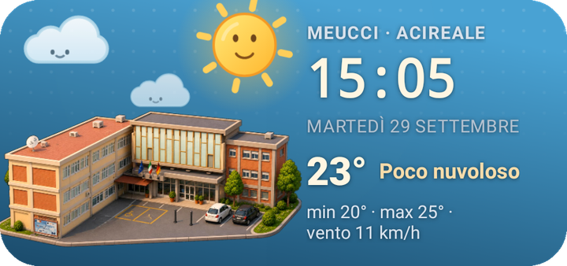
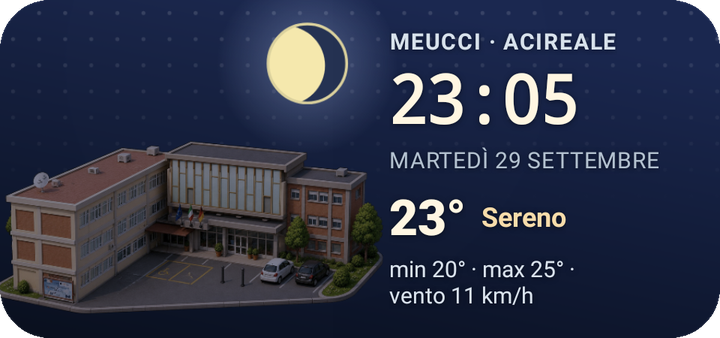

IISS «G. Ferraris» · plesso Meucci
Meteo Meucci sulla Home del telefono
Un widget per Android con il nostro plesso, l’ora e il meteo di Acireale. Il cielo cambia con la giornata: sole la mattina, luna la sera, nuvole e pioggia quando servono.


Solo per Android · versione 1.2
Come installarla
- Tocca Scarica l’app. Se Chrome avvisa che il file «può essere dannoso», tocca Scarica comunque: succede con ogni app che non viene dal Play Store.
- Apri il file scaricato dalla notifica o dalla cartella Download. Android chiede di consentire l’installazione da questa fonte: consenti e torna indietro.
- Apri Meteo Meucci e tocca Aggiungi il widget alla Home. In alternativa: tieni premuto su uno spazio vuoto della Home → Widget → Meteo Meucci.
Se qualcosa si blocca
Ho aperto il link da WhatsApp o Telegram e non scarica
Le app di messaggistica aprono i link in un loro browser interno, che spesso non gestisce i download. Tocca il menu ⋮ in alto a destra e scegli Apri in Chrome, poi scarica da lì.
Play Protect dice «App bloccata» o «App non sicura»
Succede perché l’app non passa dal Play Store. Tocca Maggiori dettagli e poi Installa comunque. L’app chiede solo l’accesso a Internet, per il meteo.
Non trovo il widget nell’elenco
Apri una volta l’app Meteo Meucci, poi riprova: alcuni telefoni mostrano i widget di un’app solo dopo il primo avvio. La misura consigliata è 4×2; si può ridimensionare.
Cosa fa
- L’orologio è quello del telefono: scorre da solo e non consuma batteria.
- Il meteo arriva da Open-Meteo e si aggiorna ogni mezz’ora circa. Senza rete resta l’ultimo dato.
- Cinque stili a scelta dall’app: originale, acquerello, mattoncini, progetto tecnico, cyberpunk.
- Toccando il widget si apre la versione animata.
- Non raccoglie dati e non chiede altri permessi oltre a Internet.